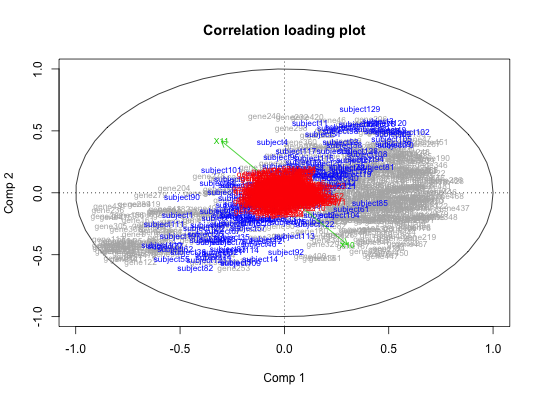

Based on the NIPALS algorithm this function fits an LPLS - regression model to a dummy - response vector X1 using a predictor matrix X2 with potentially background knowledge matrix X3. This function only supports a single response variable, that is, X1 must be a vector. The fitted model is similar to a regular PLS - model in case X3 is NULL. The matrix X3 typically hold background information about the variables in X2 (e.g. root matrix of some prior covariance matrix, or relevant old data). Based on the size of the parameter alpha, the background information may alter the regular PLS - loading weights in order to make the background information influential on the estimated regression coefficients of the final linear model.
lplsReg(X1, X2, X3, npc = 2, alpha = 0.5, rowcentering = c(F, F), colcentering = c(T, F), grandcentering = c(F, F), pathshrink = 0, niter = 30)
| X1 | A response vector or matrix for regression. For classification this should be either a factor or a dummy coded 0/1 matrix with one column per group. |
|---|---|
| X2 | Predictor matrix of size (n x p). |
| X3 | Background information matrix of size (m x p) |
| npc | Number of components to use in the LPLS model. |
| alpha | Parameter between 0 and 1 for controlling the influence of X3. If 0 no influence, if 1 maximum influence. |
| rowcentering | A logical vector of length 2. The elements setting the potential row - centering of X2 and X3, respectively. Default is c(FALSE, FALSE), that is, no row centering. |
| colcentering | A logical vector of length 2. The elements setting the
potential column centering of X2 and X3, respectively. Default is c(TRUE,
FALSE), that is, column centering of X2 only. If X3 holds a set of |
| grandcentering | A logical vector of length 2. If TRUE the respective matrix (X2 or X3) will be centered using the overall mean only. |
| pathshrink | A numeric [0, 1). May be used to perform soft - shrinkage of the rows of X3 as a type of variable selection on the background information. The properties of this is so far not much explored. See Saebo et al. 2008b on ST - PLS for a similar approach for variable selection in PLS. |
| niter | The number of NIPALS iterations. Default is 10. |
The function call used
The number of components used
Correlation loadings vector for X1
Correlation loadings for X2
Correlation scores for X2
Correlation loadings for X3
Latent vector matrices for X1, X2 and X3 (a mix of loading weights and scores in PLS terminology).
Loading vectors for the variables in X1
Loading vectors for the variables in X2
Loading vectors for X3
The (centered) data matrices used as input
Residual matrices after extracting the information
from the npc latent components.
Saebo, S., Almoy, T., Flatberg, A., Aastveit, A.H., Martens, H. (2008a) LPLS - regression: a method for prediction and classification under the influence of background information on predictor variables. Chemometrics and Intelligent Laboratory Systems, 91 (2) 121 - 132.
Saebo, S., Almoy, T., Aaroe, J., Aastveit, A.H. (2008b) ST - PLS: A multi - directional nearest shrunken centroid type classifier via Partial Least Squares. Journal of Chemometrics, 22 (1), 54 - 62.
data(BCdata) fit.class <- lplsReg(factor(BCdata$Y), BCdata$X, BCdata$Z, npc = 10) plot(fit.class)#For regression, drop the factor() statement and treat the response as a continuous variable. fit.reg <- lplsReg(BCdata$Y, BCdata$X, BCdata$Z, npc = 10)